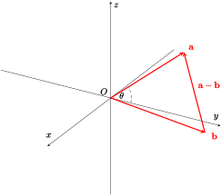
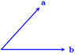
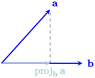

SubsectionDefinition and Properties of the Dot Product
Suppose we’re given two vectors. What we’d like to do is to come up with a measure of how much these vectors overlap. Such a measure may be useful for determining if forces are too close together, for example. So consider two vectors \(\mathbf{x} = \dotprod{x_{1},y_{1},z_{1}}\) and \(\mathbf{y} = \dotprod{x_{2},y_{2},z_{2}}\) as in the following diagram.
Figure11.3.1.Vector overlap.
One way we can measure how much \(\mathbf{x}\) and \(\mathbf{y}\) overlap is to find \(\norm{\mathbf{x}+\mathbf{y}}\text{,}\) or equivalently \(\norm{\mathbf{x}+\mathbf{y}}^{2},\) since this is larger if \(\mathbf{x}\) and \(\mathbf{y}\) are more closely aligned. 7 From Vector Components, we know that
The only part of this that could possibly depend on how closely \(\mathbf{x}\) and \(\mathbf{y}\) overlap is the middle term \(2(x_{1}x_{2}+y_{1}y_{2}+z_{1}z_{2})\text{.}\) So we’ll (optimistically... for now) take what’s inside the parentheses and use it as the measure we’re looking for.
Definition11.3.2.The Dot Product.
Let \(\mathbf{x} = \dotprod{x_{1},y_{1},z_{1}}\) and \(\mathbf{y} = \dotprod{x_{2},y_{2},z_{2}}\text{.}\) The dot product of \(\mathbf{x}\) with \(\mathbf{y}\text{,}\) denoted \(\mathbf{x}\cdot\mathbf{y},\) is given by
It also doesn’t matter what order we take the vectors in for the dot product: we get the same answer regardless. However, it does matter that we only use two vectors. The dot product takes two vectors and gives a scalar. In other words, it is impossible to take the dot product of more than two vectors at a time! So quantities such as \(\mathbf{x}\cdot\mathbf{y}\cdot\mathbf{z}\) are not meaningful.
Theorem11.3.4.Properties of the Dot Product.
Let \(\mathbf{x},\mathbf{y}\) and \(\mathbf{z}\) be vectors, and let \(\alpha\) be a scalar. Then the following properties hold:
Our goal was to define a measure for how much two given vectors align, or are correlated. The following result tells us that the dot product is actually a reasonable measure of this.
Theorem11.3.5.Geometry of the Dot Product.
Let \(\mathbf{a}\) and \(\mathbf{b}\) denote vectors, and let \(0\leq\theta\leq\pi\) denote the angle between these vectors if the tails of both are moved to the origin. Then
Place both vectors \(\mathbf{a}\) and \(\mathbf{b}\) at the origin, and then draw the vector \(\mathbf{a}-\mathbf{b}\) from the tip of \(\mathbf{b}\) to the tip of \(\mathbf{a}\text{,}\) like so:

Figure11.3.6.Geometry of the dot product.
Then \(\mathbf{a},\mathbf{b}\) and \(\mathbf{a}-\mathbf{b}\) form a triangle. We want to relate the dot product \(\mathbf{a}\cdot\mathbf{b}\) with the angle \(\theta\text{,}\) so we’ll start by using the Law of Cosines to get an equation involving \(\theta\text{.}\) The Law of Cosines states that
It’s usually easier to use Definition 11.3.2 to compute dot products. However, Theorem 11.3.5 gives us extremely useful geometric information about the dot product. For example, we get the following result very quickly: two vectors \(\mathbf{a}\) and \(\mathbf{b}\) are perpendicular if and only if \(\mathbf{a}\cdot\mathbf{b} = 0\text{.}\)
Example11.3.8.Checking orthogonality using the dot product.
Let \(\mathbf{a} = \dotprod{0,1,-3}\) and \(\mathbf{b} = \dotprod{1,1,2}.\) Then we can say right away that these vectors are not orthogonal to each other since \(\mathbf{a}\cdot\mathbf{b} = -5 \neq 0\text{.}\)
Example11.3.9.Finding angles between lines.
Consider the lines \(x+2y = 7\) and \(5x-y = 2\) in \(\RR^{2}\text{,}\) plotted below:

Figure11.3.10.Angle between lines.
Suppose we want to find the acute angle \(\theta\) these lines make with each other. We can do so by finding vectors \(\mathbf{a}\) and \(\mathbf{b}\) that point in the same directions as these lines. We’ll start by finding the vector \(\mathbf{a}\) which points in the same direction as the line \(x+2y=7\text{.}\) To do so, we need two points on this line: \(A_{1} = (7,0)\) and \(A_{2} = (5,1)\text{.}\) So we can take \(\mathbf{a}\) to be
Consider two vectors \(\mathbf{a}\) and \(\mathbf{b}\) arranged as follows:

Figure11.3.11.The vectors \(\mathbf{a}\) and \(\mathbf{b}\text{.}\)
Now draw a line from the tip of \(\mathbf{a}\) to the point on \(\mathbf{b}\) that is closest to the tip of \(\mathbf{a}\text{;}\) such a line must be orthogonal to \(\mathbf{b}\text{.}\) This point on \(\mathbf{b}\) defines a new vector that we call the projection of \(\mathbf{a}\) onto \(\mathbf{b}\); we denote this vector by \(\proj{\mathbf{b}}{\mathbf{a}}\text{.}\)

Figure11.3.12.The projection of \(\mathbf{a}\) onto \(\mathbf{b}\text{.}\)
The projection \(\proj{\mathbf{b}}{\mathbf{a}}\) can be thought of as the vector parallel to \(\mathbf{b}\) that best approximates \(\mathbf{a}\text{.}\) What we’d like to do now is to actually find a formula for this projection. If we let \(\theta\) denote the acute angle between the vectors \(\mathbf{a}\) and \(\mathbf{b}\text{,}\) then
Since the projection must also be parallel to \(\mathbf{b}\text{,}\) then this is enough information to state exactly what \(\proj{\mathbf{b}}{\mathbf{a}}\) should be: \(\proj{\mathbf{b}}{\mathbf{a}} = (\norm{\mathbf{a}}\cos\theta)\frac{\mathbf{b}}{\norm{\mathbf{b}}}.\) We can simplify this formula somewhat by making use of Theorem 11.3.5.
Theorem11.3.13.Vector Projection Formulas.
Let \(\mathbf{a}\) and \(\mathbf{b}\) denote vectors in \(\RR^{2}\) or \(\RR^{3}\text{.}\) Then the projection of \(\mathbf{a}\) onto \(\mathbf{b}\) is given by
Let \(\mathbf{a} = \dotprod{1,4}\) and \(\mathbf{b} = \dotprod{2,3}\text{.}\) Then by Theorem 11.3.13 the projection of \(\mathbf{a}\) onto \(\mathbf{b}\) is given by
Another example of vector projection is computing work done by a force. In particular, suppose we have a force \(\mathbf{F}\) and some displacement vector \(\mathbf{D}\text{.}\) We define the work done by \(\mathbf{F}\) along \(\mathbf{D}\) to be the product of the component of \(\mathbf{F}\) along \(\mathbf{D}\) times the distance moved. If we let \(\theta\) denote the acute angle between \(\mathbf{F}\) and \(\mathbf{D}\text{,}\) then the work \(W\) done is given by
\begin{equation*}
W = (\norm{\mathbf{F}}\cos\theta)\norm{\mathbf{D}},
\end{equation*}
which is exactly equal to \(\mathbf{F}\cdot\mathbf{D}\) by Theorem 11.3.5.
Example11.3.15.Finding work done by a force.
Suppose a force \(\mathbf{F} = 2\mathbf{i}-3\mathbf{j}+\mathbf{k}\) moves a particle from the point \((2,3,-1)\) to the point \((1,0,-3)\text{,}\) where the force is measured in newtons and the distance in meters. We want to find the work done by this force on the particle. To do so, we need the displacement \(\mathbf{D}\text{:}\)